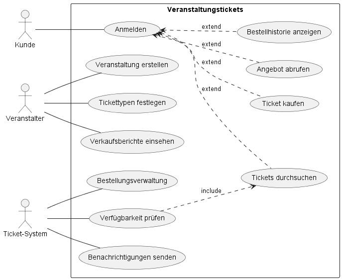
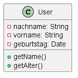
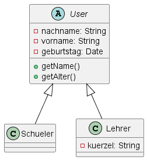
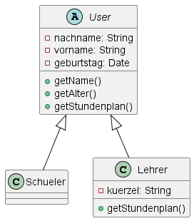
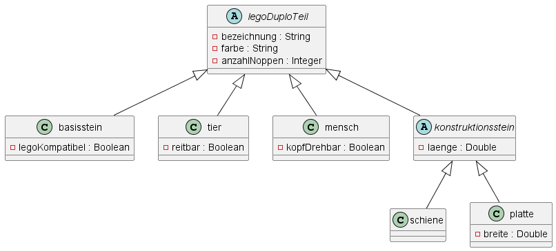
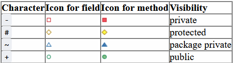
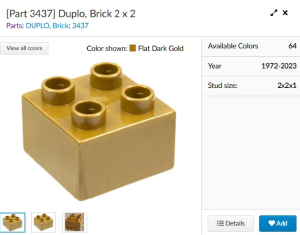
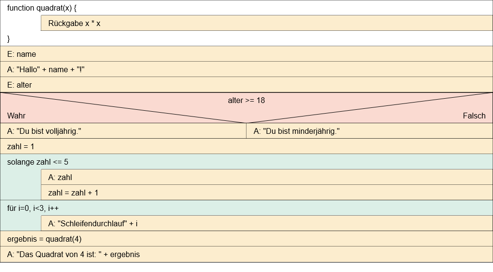
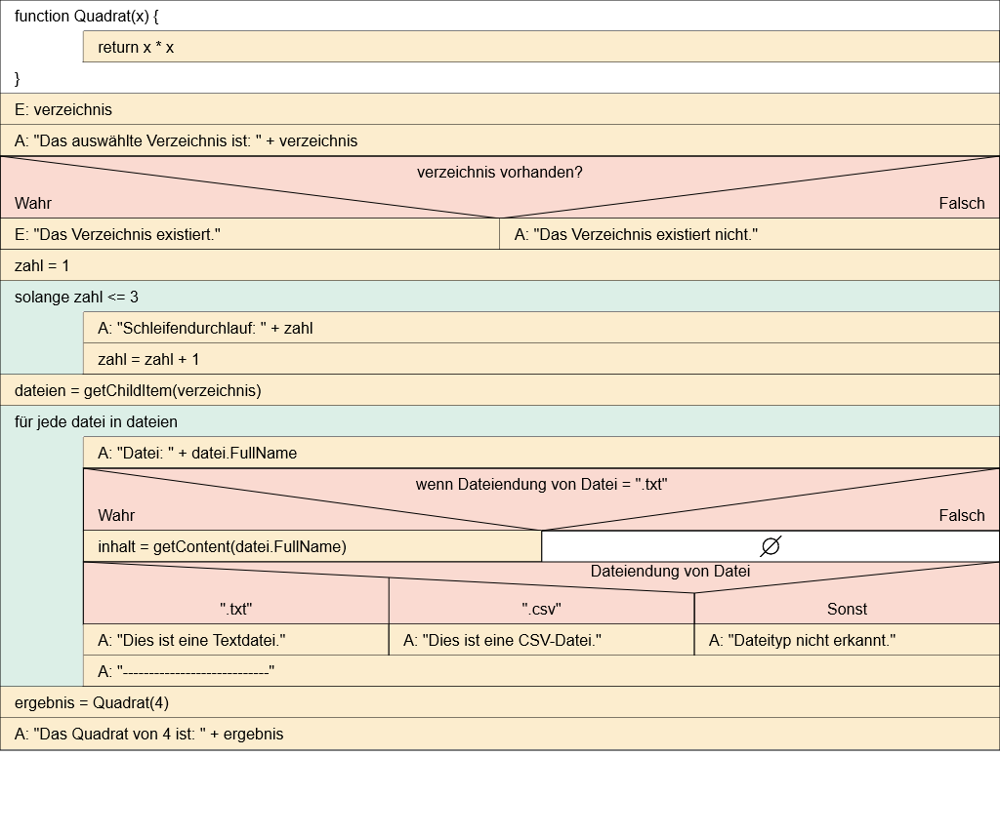

Anwendungsentwicklung
Idealtypische Vorgehensmodelle unterscheiden
Arbeitsauftrag - Klassische und agile Vorgehensmodelle unterscheiden
Aufgabe 1
Ein Vorgehensmodell in der Projektplanung bzw. der Softwareentwicklung ist ein strukturierter Ansatz oder eine Methode, die den Prozess beschreibt, wie ein Projekt geplant, durchgeführt und abgeschlossen wird. Es bietet Richtlinien und Schritte, die Teams dabei unterstützen, ihre Ziele zu erreichen und die Qualität ihrer Arbeit zu verbessern.
Aufgabe 2
Das Wasserfallmodell ist ein lineares Vorgehensmodell, bei dem der Entwicklungsprozess in aufeinanderfolgende Phasen unterteilt ist. Jede Phase muss abgeschlossen sein, bevor die nächste beginnt. Die Phasen umfassen Anforderungsanalyse, Systementwurf, Implementierung, Testen, Deployment und Wartung.
Vorteile: - Klare Struktur und einfache Handhabung. - Gut geeignet für kleine Projekte mit klaren Anforderungen.
Nachteile: - Starre Natur, Anpassungen sind schwer. - Kundenrückmeldungen werden erst spät berücksichtigt.
Aufgabe 3
Das Spiralmodell ist iterativ und inkrementell. Es kombiniert Ideen des Wasserfallmodells mit Prototyping. Der Prozess besteht aus sich wiederholenden Zyklen, die schrittweise die Entwicklung vorantreiben. Jede Spirale repräsentiert eine Iteration.
Vorteile: - Flexibilität durch iterative Natur. - Risikomanagement ist integriert.
Nachteile: - Komplexität und Aufwand der Planung.
Aufgabe 4
Das V-Modell ist ein Vorgehensmodell, das speziell auf die Verbindung von Entwicklungsphasen und dazugehörigen Testphasen Wert legt. Es zeigt die Beziehung zwischen jeder Entwicklungsphase und ihrer zugehörigen Testphase in einem V-Diagramm.
Vorteile: - Betonung von Testaktivitäten. - Klare Verknüpfung von Entwicklungs- und Testprozessen.
Nachteile: - Starre Struktur. - Wenig Flexibilität bei Änderungen.
Aufgabe 5
Scrum ist ein agiles Framework für die Softwareentwicklung, das auf iterativen, inkrementellen Prozessen basiert. Es verwendet Sprints (typischerweise 2-4 Wochen) für die Entwicklung von funktionsfähigen Softwareteilen.
Vorteile: - Hohe Flexibilität und Anpassungsfähigkeit. - Enge Zusammenarbeit im Team.
Nachteile: - Nicht immer geeignet für Projekte mit festen Anforderungen. - Komplexität der Implementierung.
Aufgabe 6
Kanban ist ein agiles Framework, das den Fokus auf kontinuierliche Lieferung legt. Es verwendet visuelle Boards zur Darstellung des Arbeitsprozesses und begrenzt die gleichzeitige Arbeit in den verschiedenen Phasen.
Vorteile: - Flexibilität und kontinuierliche Lieferung. - Geringe Overhead-Kosten.
Nachteile: - Möglicher Mangel an Struktur. - Nicht für komplexe Projekte geeignet.
Aufgabe 7
Extreme Programming ist eine agile Methode, die auf intensiver Zusammenarbeit und kontinuierlichem Feedback basiert. Sie betont Praktiken wie Paarprogrammierung, Testgetriebene Entwicklung und kurze Entwicklungszyklen.
Vorteile: - Hohe Softwarequalität durch Fokus auf Tests. - Flexibilität und Anpassungsfähigkeit.
Nachteile: - Kann für traditionelle Organisationen zu radikal sein. - Erfordert hochmotivierte Teams.
Aufgabe 8
Die klassischen Vorgehensmodelle wie Wasserfall, Spiral und V-Modell zeichnen sich durch ihre linearen und plangetriebenen Ansätze aus. Sie setzen auf detaillierte Planung und Dokumentation im Voraus, was zu einer geringen Flexibilität bei Änderungen führen kann. Diese Modelle eignen sich gut für Projekte mit stabilen Anforderungen und klaren Spezifikationen.
Im Gegensatz dazu sind agile Vorgehensmodelle wie Scrum, Kanban und Extreme Programming iterative und inkrementelle Ansätze. Sie betonen Flexibilität, schnelle Anpassung an Änderungen und kontinuierliche Lieferung von funktionierender Software. Agile Modelle sind besonders effektiv in Umgebungen, in denen sich Anforderungen häufig ändern oder nicht von Anfang an klar definiert sind.
Aufgabe 9
Ein MVP, oder Minimal Viable Product (Minimales Produkt mit Überlebensfähigkeit), ist ein zentrales Konzept in der Produktentwicklung, insbesondere im Zusammenhang mit verschiedenen Vorgehensmodellen, einschließlich agiler Methoden. Es bezieht sich auf die Entwicklung und Bereitstellung einer grundlegenden Version eines Produkts oder einer Anwendung, die gerade ausreichend ist, um die Kernfunktionalitäten zu demonstrieren und einen Wert für die Benutzer zu bieten.
Die Idee hinter einem MVP ist es, schnell auf den Markt zu kommen und Feedback von echten Benutzern zu erhalten. Dieses Feedback wird dann genutzt, um das Produkt weiter zu verbessern und besser an die tatsächlichen Bedürfnisse der Benutzer anzupassen. Das MVP-Konzept unterstützt somit den iterativen und inkrementellen Ansatz, der in vielen agilen Vorgehensmodellen wie Scrum und Extreme Programming betont wird.
Ein MVP zeichnet sich durch folgende Merkmale aus:
- Minimale Funktionalität: Es enthält nur die grundlegenden Funktionen, die notwendig sind, um das Produkt als brauchbar zu betrachten. Alle zusätzlichen Funktionen werden zurückgestellt, bis das Feedback der Benutzer ausgewertet wurde.
- Validierung von Annahmen: Das MVP hilft bei der Überprüfung von Annahmen und Hypothesen über das Produkt. Durch die Bereitstellung einer minimalen Version kann das Team schnell feststellen, ob ihre Ideen und Konzepte den tatsächlichen Bedürfnissen der Benutzer entsprechen.
- Schnelle Markteinführung: Der Fokus liegt darauf, das Produkt so schnell wie möglich auf den Markt zu bringen, anstatt monatelang an einer umfassenden Version zu arbeiten. Dies ermöglicht es, frühzeitig Rückmeldungen zu sammeln und den Entwicklungsprozess entsprechend anzupassen.
- Iterative Entwicklung: Nachdem das MVP veröffentlicht wurde, folgen weitere Iterationen, um das Produkt basierend auf dem Feedback und den gewonnenen Erkenntnissen zu verbessern. Dieser iterative Ansatz ermöglicht eine ständige Anpassung an sich ändernde Anforderungen und Kundenwünsche.
Betriebssystem und Anwendungssoftware unterscheiden
Arbeitsauftrag - Betriebssysteme unterscheiden
Aufgabe 1
- Microsoft Windows: Betrieben auf Desktop- und Laptop-Computern.
- macOS: Exklusiv auf Apple-Computern (MacBooks, iMacs) verwendet.
- Linux: In verschiedenen Distributionen für Server, Embedded Systems und teilweise auch auf Desktops.
- Unix: In verschiedenen Varianten, hauptsächlich in Unternehmensumgebungen und wissenschaftlichen Anwendungen.
- Android: Betriebssystem für Mobilgeräte, insbesondere Smartphones und Tablets.
- iOS: Exklusiv für iPhones, iPads und iPods von Apple.
Aufgabe 2
- Das BIOS/UEFI (Basic Input/Output System / Unified Extensible Firmware Interface) ist eine Firmware, die den Computer beim Start initialisiert. Es stellt grundlegende Hardwarefunktionen bereit.
- Das Betriebssystem (z. B. Windows, Linux) wird nach dem BIOS/UEFI geladen und verwaltet Ressourcen, Treiber und Anwendungen auf dem Computer.
- Anwendungssoftware sind Programme, die auf dem Betriebssystem laufen und bestimmte Aufgaben für den Benutzer erledigen.
Die Beziehung besteht darin, dass das BIOS/UEFI die Plattform vorbereitet, das Betriebssystem geladen wird, und daraufhin Anwendungssoftware auf dem Betriebssystem ausgeführt wird.
Aufgabe 3
- dir:
- Zeigt den Inhalt des aktuellen Verzeichnisses an.
- Beispiel:
dir - mkdir:
- Erstellt ein neues Verzeichnis.
- Beispiel:
mkdir NeuerOrdnererstellt einen Ordner namens "NeuerOrdner". - cd:
- Wechselt das aktuelle Verzeichnis.
- Beispiel:
cd Pfad\Zum\Verzeichniswechselt in das angegebene Verzeichnis. - ipconfig:
- Zeigt die IP-Konfiguration für alle Netzwerkadapter an.
- Beispiel:
ipconfig /allzeigt detaillierte Netzwerkinformationen an. - ping:
- Überprüft die Erreichbarkeit eines Netzwerkziels.
- Beispiel:
ping www.example.comsendet Ping-Anfragen an die angegebene Website. - del:
- Löscht eine oder mehrere Dateien.
- Beispiel:
del Dateiname.txtlöscht die Datei mit dem angegebenen Namen. - copy:
- Kopiert eine oder mehrere Dateien von einem Ort an einen anderen.
- Beispiel:
copy Quelldatei Zielverzeichniskopiert die Datei in das angegebene Verzeichnis. - tracert:
- Zeigt den Weg, den ein Datenpaket von der Quelle zu einem Ziel nimmt.
- Beispiel:
tracert www.example.comzeigt den Netzwerkpfad zu "www.example.com" an.
Aufgabe 4
- ls:
- Listet den Inhalt des aktuellen Verzeichnisses auf.
- Beispiel:
ls -lzeigt eine detaillierte Liste der Dateien im Verzeichnis an. - mkdir:
- Erstellt ein neues Verzeichnis.
- Beispiel:
mkdir NeuerOrdnererstellt einen Ordner namens "NeuerOrdner". - cd:
- Wechselt das aktuelle Verzeichnis.
- Beispiel:
cd Pfad/Zum/Verzeichniswechselt in das angegebene Verzeichnis. - ifconfig:
- Zeigt die IP-Konfiguration für Netzwerkadapter an.
- Beispiel:
ifconfigzeigt die Netzwerkkonfiguration an. - ping:
- Überprüft die Erreichbarkeit eines Netzwerkziels.
- Beispiel:
ping www.example.comsendet Ping-Anfragen an die angegebene Website. - iproute2:
- Bietet fortgeschrittene Netzwerkkonfigurationsfunktionen.
- Beispiel:
ip route showzeigt die Routing-Tabelle an. - arp:
- Zeigt die ARP-Tabelle mit den MAC-Adressen an.
- Beispiel:
arp -azeigt die ARP-Tabelle an. - cp:
- Kopiert Dateien oder Verzeichnisse.
- Beispiel:
cp Quelldatei Zielverzeichniskopiert die Datei in das angegebene Verzeichnis. - chmod:
- Ändert die Berechtigungen einer Datei.
- Beispiel:
chmod +x Dateinamegibt Ausführungsrechte für die Datei. - alias:
- Erstellt eine Abkürzung für einen Befehl oder eine Befehlskette.
- Beispiel:
alias ll='ls -l'erstellt eine Abkürzung, sodasslldas gleiche wiels -list. - traceroute:
- Zeigt den Netzwerkpfad zu einem Ziel an.
- Beispiel:
traceroute www.example.comzeigt den Netzwerkpfad zu "www.example.com" an.
Arbeitsauftrag - Anwendungssoftware unterscheiden
Aufgabe 1
Standardsoftware bezieht sich auf vorgefertigte Softwareprodukte, die allgemein auf dem Markt verfügbar sind und für eine breite Palette von Anwendern oder Unternehmen geeignet sind. Diese Softwareprodukte sind nicht speziell auf die individuellen Anforderungen eines bestimmten Benutzers oder einer bestimmten Organisation zugeschnitten. Stattdessen bieten sie eine Reihe von Funktionen und Merkmalen, die von vielen Benutzern in verschiedenen Branchen genutzt werden können. Beispiele für Standardsoftware sind Betriebssysteme wie Windows oder macOS, Office-Anwendungen wie Microsoft Office und Softwarepakete wie Adobe Photoshop.
Aufgabe 2
Branchensoftware, auch als Industriesoftware oder Fachsoftware bezeichnet, ist Software, die speziell für die Anforderungen und Prozesse einer bestimmten Branche entwickelt wurde. Diese Softwarelösungen sind darauf ausgerichtet, die spezifischen Bedürfnisse, Abläufe und Anforderungen einer bestimmten Branche zu unterstützen. Branchensoftware kann in verschiedenen Sektoren eingesetzt werden, darunter Gesundheitswesen, Finanzwesen, Produktion, Einzelhandel, Bildung und mehr. Beispiele für Branchensoftware sind Krankenhausinformationssysteme (KIS) im Gesundheitswesen, Buchhaltungssoftware für das Finanzwesen oder CAD/CAM-Software in der Fertigungsindustrie.
Aufgabe 3
Individualsoftware bezieht sich auf maßgeschneiderte Softwarelösungen, die speziell für die spezifischen Anforderungen und Bedürfnisse eines bestimmten Benutzers, Unternehmens oder einer Organisation entwickelt werden. Anders als Standardsoftware, die für eine breite Nutzerbasis ausgelegt ist, wird Individualsoftware auf die einzigartigen Geschäftsprozesse, Anforderungen und Strukturen eines spezifischen Kunden zugeschnitten. Die Entwicklung von Individualsoftware ermöglicht eine hohe Anpassbarkeit und die Integration spezifischer Funktionen, die in Standardlösungen möglicherweise nicht vorhanden sind. Dieser Ansatz wird oft gewählt, wenn die vorhandenen Standardsoftwareprodukte nicht alle erforderlichen Funktionen abdecken oder wenn eine spezifische Wettbewerbsvorteil geschaffen werden soll.
Arbeitsauftrag - Programmiersprachen für Software unterscheiden
Aufgabe 1
- Abstraktionsniveau: Wie nah an der Maschine oder wie abstrakt die Sprache ist.
- Paradigma: Welche grundlegende Herangehensweise an die Programmierung sie fördern (z.B., imperativ, deklarativ, objektorientiert, funktional).
- Typisierung: Ob die Sprache statisch oder dynamisch typisiert ist.
- Syntax: Die Grammatik und Struktur der Sprache.
- Verwendungsbereich: Ob die Sprache spezialisiert ist (z.B., Webentwicklung, Datenanalyse, eingebettete Systeme).
- Zielplattform: Auf welchen Arten von Systemen oder Geräten die Sprache ausgeführt wird.
Aufgabe 2
- Objekte: Programmierung basiert auf der Konzeptualisierung und Modellierung von echten oder virtuellen Objekten.
- Klassen: Objekte werden durch Klassen beschrieben, die den Bauplan für die Objekte darstellen.
- Vererbung: Erlaubt es einer Klasse, Eigenschaften und Methoden von einer anderen Klasse zu erben.
- Polymorphismus: Erlaubt es Objekten, sich je nach Kontext unterschiedlich zu verhalten.
- Kapselung: Verbergt die internen Details einer Klasse und erlaubt den Zugriff nur durch definierte Schnittstellen.
Aufgabe 3
Kompilierte Sprachen: Der Quellcode wird vor der Ausführung in Maschinencode übersetzt, und der resultierende ausführbare Code wird direkt ausgeführt. Der Übersetzungsprozess erzeugt oft eine separate ausführbare Datei.
Beispiel: C, C++, Java (teilweise kompiliert).
Interpretierte Sprachen: Der Quellcode wird zeilenweise von einem Interpreter interpretiert und direkt ausgeführt, ohne eine separate Übersetzung in Maschinencode zu erzeugen.
Beispiel: Python, JavaScript, Ruby.
Aufgabe 4
- Native Anwendungen: Werden speziell für eine bestimmte Plattform (Betriebssystem oder Hardware) entwickelt und laufen nur auf dieser Plattform, ohne Anpassungen für andere Systeme.
- Cross-Platform Anwendungen: Sind so entwickelt, dass sie auf mehreren Plattformen laufen können, ohne den Code für jede Plattform separat zu schreiben. Dies kann durch Verwendung von Frameworks, Bibliotheken oder plattformunabhängigen Technologien erreicht werden.
UML-Anwendungsfalldiagramme erstellen
Arbeitsauftrag - UML-Anwendungsfalldiagramme erstellen
Aufgabe 1
Das UML-Anwendungsfalldiagramm ist in der objektorientierten Programmierung (OOP) ein wichtiges Werkzeug zur Modellierung und Visualisierung der funktionalen Anforderungen eines Systems. Es dient dazu, die verschiedenen Funktionen oder Aufgaben (Anwendungsfälle) zu identifizieren, die ein System für seine Benutzer oder externe Systeme bereitstellen soll.
- Identifikation von Anwendungsfällen: Das Anwendungsfalldiagramm hilft dabei, die verschiedenen Aktivitäten oder Aufgaben zu identifizieren, die ein System für Benutzer oder externe Systeme ausführt.
- Darstellung von Benutzerinteraktionen: Es visualisiert die Interaktionen zwischen den Benutzern (Akteuren) und dem System. Das zeigt, wie die Benutzer mit dem System agieren und welche Funktionen sie ausführen können.
- Definition von Systemgrenzen: Das Diagramm hilft dabei, klare Grenzen für das System zu setzen, indem es zeigt, wer die Hauptakteure sind und welche Aufgaben innerhalb des Systems durchgeführt werden.
- Festlegung von Systemfunktionen: Es unterstützt die Festlegung und Dokumentation der Funktionen, die das System für seine Benutzer bereitstellt. Dies erleichtert die Kommunikation zwischen Stakeholdern, Entwicklern und anderen Beteiligten.
- Basis für Systementwicklung: Das Anwendungsfalldiagramm dient als Grundlage für die weitere Systementwicklung in der OOP. Es unterstützt die Definition von Klassen, Methoden und anderen relevanten Systemkomponenten.
- Schnittstellenidentifikation: Es hilft bei der Identifikation von Schnittstellen zwischen dem System und seinen Benutzern oder anderen Systemen.
- Testfallableitung: Es unterstützt die Ableitung von Testfällen, indem es klare Szenarien für die Nutzung des Systems definiert. Dies erleichtert die Überprüfung, ob das System die definierten Anforderungen erfüllt.
Aufgabe 2
- Akteur: Ein Akteur repräsentiert eine externe Entität, die mit dem System interagiert. Dies können Personen, Gruppen von Personen, andere Systeme oder sogar Hardware sein. Akteure werden durch Piktogramme in der Form von Kästen dargestellt, normalerweise oben auf dem Diagramm platziert.
- Systemgrenze: Die Systemgrenze definiert den Umfang des Systems und zeigt an, welche Elemente als Teil des Systems betrachtet werden. Die Systemgrenze wird durch eine Linie um das gesamte Diagramm dargestellt und gibt an, welche Akteure und Anwendungsfälle innerhalb des Systems modelliert werden.
- Anwendungsfall: Ein Anwendungsfall repräsentiert eine spezifische Funktion oder Aufgabe, die das System für einen oder mehrere Akteure durchführt. Ein Anwendungsfall wird durch einen Ellipsen-förmigen Kasten dargestellt und normalerweise mit einem Namen beschriftet.
- Beziehung: Beziehungen verbinden Akteure und Anwendungsfälle miteinander. Sie zeigen an, wie die Akteure mit den Anwendungsfällen interagieren. Es gibt zwei Hauptarten von Beziehungen: include und extend.
- include-Beziehung: Die include-Beziehung zeigt an, dass ein Anwendungsfall einen anderen Anwendungsfall einschließt. Dies bedeutet, dass der eingeschlossene Anwendungsfall unabhängig vom umfassenden Anwendungsfall existieren und ausgeführt werden kann. Die include-Beziehung wird durch eine gestrichelte Linie mit einem offenen Pfeil dargestellt, der auf den eingeschlossenen Anwendungsfall zeigt.
- extend-Beziehung: Die extend-Beziehung zeigt an, dass ein Anwendungsfall optional erweitert werden kann. Der erweiternde Anwendungsfall wird nur unter bestimmten Bedingungen oder Szenarien ausgeführt. Die extend-Beziehung wird durch eine gestrichelte Linie mit einem offenen Pfeil dargestellt, der vom erweiternden Anwendungsfall zum erweiterten Anwendungsfall zeigt.
Aufgabe 3
User Stories
User Stories sind eine Methode in der agilen Softwareentwicklung, um Anforderungen aus der Perspektive des Benutzers zu formulieren. Sie sind kurz, prägnant und fokussieren sich darauf, welchen Nutzen der Benutzer aus einer bestimmten Funktionalität zieht. Eine typische User Story folgt dem Format:
"Als [Rolle] möchte ich [Funktionalität], um [Nutzen/Ziel]."
- Als Benutzer möchte ich den Druckfortschritt überwachen, um die Auslastung des Druckers zu optimieren.
- Als Benutzer möchte ich den Druck abbrechen, um bei Fehlerfällen schnell reagieren zu können.
- Als Benutzer möchte ich ein 3D-Modell auswählen, um dieses drucken zu können.
- Als Benutzer möchte ich den Druckauftrag starten, um die Produktion eines Bauteils zu beginnen.
- Als Wartungspersonal möchte ich die Wartung durchführen, um ohne Unterbrechungen am Drucker Einstellungen vorzunehmen.
- Als Wartungspersonal möchte ich die Druckparameter einstellen, um ein möglichst optimales Produktionsergebnis zu erhalten.
Aufgabe 4

UML-Klassendiagramme erstellen
Arbeitsauftrag - UML-Klassendiagramme erstellen
Aufgabe 1
Eine Klasse im Sinne der objektorientierten Programmierung (OOP) ist ein Bauplan oder eine Vorlage, die die Struktur und das Verhalten von Objekten in einem Programm definiert. Eine Klasse enthält Attribute (Daten) und Methoden (Funktionen), die die Eigenschaften und das Verhalten der damit erstellten Objekte festlegen.

In dem Beispiel wird die Klasse "User" gezeigt. Diese hat die privaten (private) Attribute (Eigenschaften) um den Vor- und Nachnamen sowie das Geburtsdatum zu speichern. Die Datentypen werden hierzu aufgeführt (String für Texte, Date für das Datum). Außerdem sind öffentliche (public) Methoden genannt, welche zur Ausgabe des Namens sowie des Alters (auf Basis des hinterlegten Geburtsdatums berechnet) dienen.
Aufgabe 2
Vererbung in der objektorientierten Programmierung (OOP) ist ein Konzept, bei dem eine neue Klasse (abgeleitete Klasse oder Subklasse) von einer bestehenden Klasse (Basis- oder Elternklasse) erbt. Die abgeleitete Klasse übernimmt die Attribute und Methoden der Basisklasse und kann diese erweitern, ändern oder spezialisieren, ohne die ursprüngliche Klasse zu ändern.
Beispielsweise ist in einem Stundenplan-System der User in der allgemeinen Form nicht realisierbar (abstrakte Klasse), es können aber die vom User erbenden Schüler und Lehrer erstellt werden.

Die Klassen Schueler und Lehrer erben aus der Klasse User (das machen die Pfeile mit der geschlossenen nicht ausgefüllten Pfeilspitze klar) die allgemeinen Attribute und Methoden. Schüler als auch Lehrer erhalten damit Vor- und Nachnamen, ein Geburtsdatum, die Methode zur Ausgabe des Namen und des Alters. Die Lehrer erhalten zusätzlich zu den allgemeinen Attributen ein Kürzel.
Aufgabe 3
Im Zusammenhang mit der Vererbung von Klassen bedeutet Generalisierung, dass eine abgeleitete Klasse allgemeinere Eigenschaften oder Verhaltensweisen von der Basisklasse erbt. Also haben Lehrer und Schüler als User im Stundenplan-System jeweils Vor- und Nachnamen, die in der Oberklasse User hinterlegt - und damit generalisiert - werden können.
Spezialisierung hingegen bedeutet, dass eine abgeleitete Klasse spezifischere Eigenschaften oder Verhaltensweisen hinzufügt oder vorhandene Eigenschaften und Verhaltensweisen der Basisklasse weiter einschränkt. Hier haben aus der Perspektive der User die allgemeinen Attribute Vor- und Nachnamen. Im Stundenplan-System können die Lehrkräfte aber noch ein Kürzel haben, dies wäre die Spezialisierung von User zur Klasse Lehrer.
Aufgabe 4
Polymorphie in der objektorientierten Programmierung (OOP) bezieht sich auf die Fähigkeit von Objekten unterschiedlicher Klassen, auf dieselbe Weise auf Anfragen oder Methodenaufrufe zu reagieren. Es gibt zwei Hauptarten von Polymorphie: statische Polymorphie, die zur Compilezeit auftritt und Methodenüberladung ermöglicht, und dynamische Polymorphie, die zur Laufzeit auftritt und durch Vererbung und Methodenüberschreibung ermöglicht wird. Polymorphie ermöglicht eine flexible und erweiterbare Gestaltung von OOP-Programmen.

Im Beispiel gibt es eine allgemeingültige Weise, den individuellen Stundenplan zu erhalten, diese ist in der Klasse User hinterlegt und wird an Schüler vererbt. Auch der Lehrer erbt aus der Klasse User die Methode, diese wird beim Lehrer aber überschrieben und in anderer Art und Weise ausgeführt. Bspw. können Lehrer auch einen Raum-Stundenplan erhalten, um zu sehen, welche Klasse gerade parallel in welchem Raum der Schule ist.
Aufgabe 5

- Die oberste Klasse legoDuploTeil ist eine abstrakte Klasse. Das bedeutet, dass hieraus keine Instanz also kein Objekt gebildet werden kann. Die Klasse dient nur zur Sammlung von Attributen und Methoden, um diese dann weiterzuvererben.
- In dem genutzten Programm (plantuml) wird die Darstellung der Sichtbarkeit über Symbole geregelt:
- 
- Ein basisstein kann als Objekt aus dem Bauplan zusammengestellt werden. Aus der vererbenden Klasse legoDuploTeil werden die Bezeichnung, Farbe und Anzahl der Noppen geerbt und durch die Eigenschaft der Lego-Kompatibilität ergänzt.
- Der konstruktionsstein ist ebenfalls eine abstrakte Klasse ohne eigene Instanzen und dient der Vererbung an schiene und platte. Wenn Sie also in der Lego-Duplo-Spielecke aufgefordert würden, einen Konstruktionsstein zu reichen, müssten Sie sich für eine Schiene oder eine Platte entscheiden.
- Die benutzten Datentypen sind wie folgt:
- String: Textdatentyp - hier z.B. "Brick 2x2"
- Double: Gleitkommazahl - hier z.B. "12.5" (cm)
- Integer: Ganzzahl - hier z.B. "4"
- Boolean: Wahrheitswert, der entweder True oder False bzw. 1 oder 0 ist - hier z.B. True
- Ein Beispiel wäre nun der Basisstein:

bezeichnung = "Brick 2x2" # (geerbt aus der Klasse legoDuploTeil)
farbe = "Flat Dark Gold" # (geerbt aus der Klasse legoDuploTeil)
anzahlNoppen = 4 # (geerbt aus der Klasse legoDuploTeil)
legoKompatibel = True # (aus der Klasse basisstein)
Struktogramme zur Planung von Anwendungen nutzen
Arbeitsauftrag - Struktogramme erstellen
Aufgabe 1
- Anweisungen:
- Eingabe: Hier werden Daten eingegeben, sei es durch den Benutzer oder durch andere Teile des Programms.
- Ausgabe: Hier erfolgt die Ausgabe von Daten in der Kommandozeile.
- Standardanweisung: Eine einzelne Operation oder Aktion.
- Schleifen:
- Zählergesteuerte Schleife: Sie wird verwendet, wenn die Anzahl der Schleifendurchläufe im Voraus bekannt ist.
- Kopfgesteuerte Schleife: Eine Schleife, bei der die Bedingung am Anfang überprüft wird.
- Fußgesteuerte Schleife: Die Bedingung wird am Ende der Schleife überprüft.
- Kontrollstrukturen:
- Verzweigung: Je nach Bedingung wird der Programmfluss in zwei verschiedene Richtungen (Wahr oder Falsch) verzweigt.
- Fallunterscheidung: Ähnlich wie Verzweigung, jedoch mit mehreren Bedingungen und verschiedenen Pfaden.
- Try-Catch: Wird verwendet, um Ausnahmen oder Fehler zu behandeln. Der "Try"-Block enthält den auszuführenden Code, während der "Catch"-Block aufgerufen wird, wenn eine Ausnahme auftritt.
- Funktionen:
- Sie repräsentieren einen separaten Abschnitt des Codes, der eine bestimmte Aufgabe erfüllt. Funktionen können Parameter enthalten, die als Eingabe dienen (sogeannte Übergabeparameter), und können Werte zurückgeben.
Aufgabe 2
Ziel der Verwendung von Struktogrammen:
Das Hauptziel der Verwendung von Struktogrammen liegt in der klaren und verständlichen Planung von Programmlogiken. Struktogramme bieten eine grafische Darstellung von Algorithmen und Programmen, die es ermöglicht, den Ablauf und die Struktur des Codes visuell zu erfassen. Durch die Verwendung dieser Notationsform soll die Entwicklung von Software effizienter und fehlerärmer gestaltet werden. Die wichtigsten Ziele sind:
- Klare Darstellung: Struktogramme bieten eine klare und gut strukturierte Darstellung der Programmlogik, wodurch Entwickler leicht verstehen können, wie der Code funktionieren soll.
- Logische Strukturierung: Die grafische Notation hilft dabei, die logische Struktur des Codes zu visualisieren, einschließlich Verzweigungen, Schleifen und Funktionen. Dies erleichtert die Planung und Organisation des Codes.
- Fehlervermeidung: Durch die frühzeitige Visualisierung des Algorithmus können potenzielle Fehler oder Inkonsistenzen leichter erkannt und behoben werden, bevor der eigentliche Programmcode geschrieben wird.
- Kommunikation: Struktogramme dienen als effektives Kommunikationsmittel zwischen Entwicklern, indem sie eine gemeinsame visuelle Sprache bieten. Teammitglieder können die Logik leichter besprechen und verstehen.
Vor- und Nachteile von Struktogrammen:
Vorteile:
- Klarheit und Verständlichkeit: Die grafische Darstellung erleichtert das Verständnis der Programmlogik, sowohl für den Entwickler, der den Code erstellt, als auch für andere Teammitglieder.
- Fehlererkennung: Durch die visuelle Darstellung können Fehler und Unstimmigkeiten in der Logik frühzeitig erkannt und behoben werden, was zur Verbesserung der Codequalität beiträgt.
- Planungshilfe: Struktogramme dienen als nützliche Werkzeuge in der Planungsphase, indem sie Entwicklern helfen, den Algorithmus zu entwerfen, bevor der eigentliche Code geschrieben wird.
- Effektive Kommunikation: Sie bieten eine gemeinsame Notation, die die Kommunikation zwischen Teammitgliedern erleichtert und Missverständnisse reduziert.
Nachteile:
- Begrenzte Detailtiefe: Struktogramme können in komplexen Programmen manchmal an Detailtiefe verlieren, insbesondere wenn es um komplexe Datenstrukturen oder spezifische Implementierungsdetails geht.
- Nicht immer maschinenlesbar: Struktogramme sind primär für den menschlichen Leser gedacht und werden nicht direkt von Computern interpretiert. Der eigentliche Programmcode muss separat geschrieben werden.
- Zeitaufwändig: Das Erstellen detaillierter Struktogramme kann zeitaufwändig sein, insbesondere für umfangreiche Programme. In einigen Fällen kann dies als zusätzlicher Schritt wahrgenommen werden.
- Abstraktion: Manchmal kann die Abstraktion in Struktogrammen zu einer gewissen Entfremdung von konkreten Code-Implementierungen führen, was für einige Entwickler eine Herausforderung darstellen könnte.
Aufgabe 3

Aufgabe 4

Aufgabe 5

Arbeitsauftrag - Struktogramme mithilfe des Schreibtischtests prüfen
Aufgabe 1
Der Schreibtischtest wird wie folgt vorgenommen:
- Jede Anweisung / jedes Element im Struktogramm erhält eine Nummer, welche es möglicht, die aktuelle Position festzuhalten.
- Anlegen einer Tabelle
- In der ersten Spalte wird mit der Überschrift Position (Pos.) der aktuelle Programmschritt festgehalten.
- Für jede im Struktogramm vorkommende Variable wird eine Spalte angelegt, diese erhält den Namen der Variablen als Überschrift.
- Optional können zwei Spalten für die User-Eingaben sowie die Programmausgaben ergänzt werden.
Aufgabe 2
zu 1.

| Pos. | punkte | anzahlBewegungen | anzahlAepfel | laenge | geschwindigkeit | kollision | aktuellePositionX | aktuellePositionY | feldMitWand | feldMitSchlange | feldMitApfel | pfeilrichtungNaechsterSchritt | User-Eingabe | Spiel-Ausgabe |
|---|---|---|---|---|---|---|---|---|---|---|---|---|---|---|
| 1 | 0 | - | - | - | - | - | - | - | - | - | - | - | - | - |
| 2 | 0 | 0 | - | - | - | - | - | - | - | - | - | - | - | - |
| 3 | 0 | 0 | 7 | - | - | - | - | - | - | - | - | - | - | - |
| 4 | 0 | 0 | 7 | 3 | - | - | - | - | - | - | - | - | - | - |
| 5 | 0 | 0 | 7 | 3 | 1 | - | - | - | - | - | - | - | - | - |
| 6 | 0 | 0 | 7 | 3 | 1 | False | - | - | - | - | - | - | - | - |
| 7 | 0 | 0 | 7 | 3 | 1 | False | - | - | - | - | - | - | - | - |
| 8 | 0 | 0 | 7 | 3 | 1 | False | - | - | - | - | - | - | - | - |
| 9 | 0 | 1 | 7 | 3 | 1 | False | - | - | - | - | - | - | - | - |
| 10 | 0 | 1 | 7 | 3 | 1 | False | 21 | - | - | - | - | - | - | - |
| 11 | 0 | 1 | 7 | 3 | 1 | False | 21 | K | - | - | - | - | - | - |
| 12 | 0 | 1 | 7 | 3 | 1 | False | 21 | K | False | - | - | - | - | - |
| 13 | 0 | 1 | 7 | 3 | 1 | False | 21 | K | False | False | - | - | - | - |
| 14 | 0 | 1 | 7 | 3 | 1 | False | 21 | K | False | False | - | - | - | - |
| 17 | 0 | 1 | 7 | 3 | 1 | False | 21 | K | False | False | False | - | - | - |
| 18 | 0 | 1 | 7 | 3 | 1 | False | 21 | K | False | False | False | - | - | - |
| 23 | 0 | 1 | 7 | 3 | 1 | False | 21 | K | False | False | False | Vorwärts | Vorwärts | - |
| 24 | 0 | 1 | 7 | 3 | 1 | False | 21 | K | False | False | False | Vorwärts | - | - |
| 7 | 0 | 1 | 7 | 3 | 1 | False | 21 | K | False | False | False | Vorwärts | - | - |
| 8 | 0 | 1 | 7 | 3 | 1 | False | 21 | K | False | False | False | Vorwärts | - | - |
| 9 | 0 | 2 | 7 | 3 | 1 | False | 21 | K | False | False | False | Vorwärts | - | - |
| 10 | 0 | 2 | 7 | 3 | 1 | False | 22 | K | False | False | False | Vorwärts | - | - |
| 11 | 0 | 2 | 7 | 3 | 1 | False | 22 | K | False | False | False | Vorwärts | - | - |
| 12 | 0 | 2 | 7 | 3 | 1 | False | 22 | K | False | False | False | Vorwärts | - | - |
| 13 | 0 | 2 | 7 | 3 | 1 | False | 22 | K | False | False | False | Vorwärts | - | - |
| 14 | 0 | 2 | 7 | 3 | 1 | False | 22 | K | False | False | False | Vorwärts | - | - |
| 17 | 0 | 2 | 7 | 3 | 1 | False | 22 | K | False | False | False | Vorwärts | - | - |
| 18 | 0 | 2 | 7 | 3 | 1 | False | 22 | K | False | False | False | Vorwärts | - | - |
| 23 | 0 | 2 | 7 | 3 | 1 | False | 22 | K | False | False | False | Vorwärts | - | - |
| 7 | 0 | 2 | 7 | 3 | 1 | False | 22 | K | False | False | False | Vorwärts | - | - |
| 8 | 0 | 2 | 7 | 3 | 1 | False | 22 | K | False | False | False | Vorwärts | - | - |
| 9 | 0 | 3 | 7 | 3 | 1 | False | 22 | K | False | False | False | Vorwärts | - | - |
| 10 | 0 | 3 | 7 | 3 | 1 | False | 23 | K | False | False | False | Vorwärts | - | - |
| 11 | 0 | 3 | 7 | 3 | 1 | False | 23 | K | False | False | False | Vorwärts | - | - |
| 12 | 0 | 3 | 7 | 3 | 1 | False | 23 | K | False | False | False | Vorwärts | - | - |
| 13 | 0 | 3 | 7 | 3 | 1 | False | 23 | K | False | False | False | Vorwärts | - | - |
| 14 | 0 | 3 | 7 | 3 | 1 | False | 23 | K | False | False | False | Vorwärts | - | - |
| 17 | 0 | 3 | 7 | 3 | 1 | False | 23 | K | False | False | True | Vorwärts | - | - |
| 18 | 0 | 3 | 7 | 3 | 1 | False | 23 | K | False | False | False | Vorwärts | - | - |
| 19 | 0 | 3 | 7 | 3 | 1 | False | 23 | K | False | False | False | Vorwärts | - | - |
| 20 | 1 | 3 | 7 | 3 | 1 | False | 23 | K | False | False | False | Vorwärts | - | - |
| 21 | 1 | 5 | 7 | 3 | 1 | False | 23 | K | False | False | False | Vorwärts | - | - |
| 22 | 1 | 5 | 7 | 3 | 2 | False | 23 | K | False | False | False | Vorwärts | - | - |
| 23 | 1 | 5 | 7 | 3 | 2 | False | 23 | K | False | False | False | Vorwärts | Vorwärts | - |
| 24 | 1 | 5 | 7 | 3 | 2 | False | 23 | K | False | False | False | Vorwärts | Ende des Programms | - |
zu 2.
Die Schlange wird zwei mal vorwärts geleitet, sodass der Apfel auf 23, K gefressen wird. Hierdurch ist die Schlange um 2 Felder länger und um 1 mal schneller. Der Spieler hat einen Punktestand von 1 Punkt und die der Apfel ist nicht mehr zu sehen. Danach wird die Schlange vorwärts gesteuert und würde damit ein weiteres Feld auf die Wand zu gehen. Der User hat aber das Programm vorher beendet
zu 3.
- Ein Fehler im Struktogramm bezieht sich auf die Anzahl der Äpfel. Diese wird zu Beginn im Programm auf 7 Stück festgelegt. Im Rahmen des Programms wird die Anzahl allerdings nicht gemindert. Hieraus entsteht eine Art Endlosschleife, da die Abbruchbedingung des Programms entweder eine Kollision oder aber das Auffressen aller Äpfel beinhalten sollte (solange kollision == False AND anzahlAepfel >=1). Damit wäre ein Spielende immer nur mit einer Kollision möglich.
- Der zweite Fehler betrifft die Variable feldMitApfel. Diese wird nach dem fressen des vorhandenen Apfels nicht zurückgesetzt. Dadurch würde im nächsten Programmdurchlauf auch bei einem leeren Feld die Methode apfelEntfernen() [s. 19] erneut aufgerufen werden, ohne dass ein Apfel vorhanden wäre und damit das Programm durch einen Fehler beendet werden.